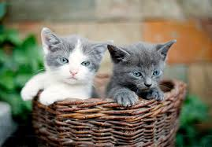

Amado y Thiago: Fueron abandonados en un basural dentro de una bolsa de residuos. Estaban desnutridos y deshidratados. Ahora están mejor de salud esperando por una familia que los quiera, tienen 3 meses de edad.

Nilo: Fue abandonado por su familia

Broly en entrenamiento: Estamos ayudándolo a confiar en las personas para que pueda tener una segunda oportunidad.